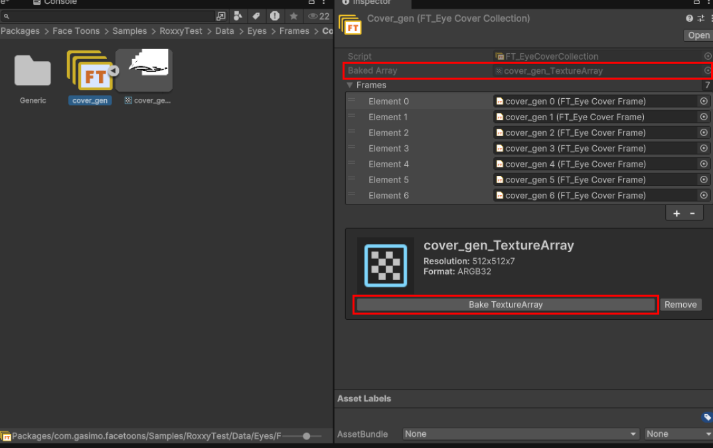

Creating Frames/Collections
It is recommended to be familiar with Basic Concepts of FaceToons.
1. Create a Frame for each pose/layer
For each iris/cover/emblem or mouthShape create its own frame and assign the textures. Create > Gasimo > FaceToons > Frame > ...
You can mass-create frames from textures by selecting all your textures, right clicking them and choosing Create > Gasimo > FaceToons > Convert Selected Textures to Frames. This will automatically create a frame for each of the textures you have selected.
2. Create Collection Assets
Group Mouth/Eye Cover frames by creating Collection assets Create>Gasimo>FaceToons>Collections>....
Assign all necessary frames into the list. Ensure that all textures in the frames are the same format, do not have crunch compression enabled are not missing.
Mouth Collections have indices 0-8 reserved for mouth-shapes Ⓐ through Ⓧ. See Mouth Frames and Collection Assets.
Click the 'Bake TextureArray' button.
If you see the 'Baked Array' field populated, the collection is setup and ready to be used by FaceToons.
